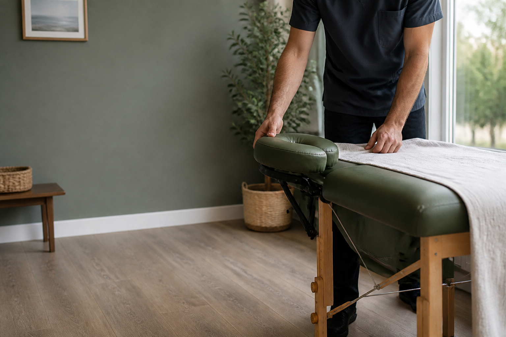

Классический массаж — для снятия напряжения после рабочего дня и возвращения лёгкости
ЧТО ВХОДИТ- спина, шея и плечи
- спокойный темп под ваше самочувствие
- масла, полотенца и стол привезу с собой
ВЫЕЗДНОЙ МАССАЖ · 08:00–23:00
Я приезжаю к вам со столом, чистыми полотенцами и всем необходимым. Профессиональный массаж — дома, без дороги и спешки.
ПОДОБРАТЬ ВРЕМЯ →
Классический массаж — для снятия напряжения после рабочего дня и возвращения лёгкости
ЧТО ВХОДИТСпортивный массаж — более интенсивная работа с мышцами после нагрузки или при ощущении перегрузки
ЧТО ВХОДИТРелакс-массаж — неспешный формат, чтобы переключиться и снять накопившуюся усталость
ЧТО ВХОДИТО ДЕНИСЕ
Я сам отвечаю на заявки, приезжаю на сеанс и подбираю технику под ваш запрос. Вам не нужно объяснять всё заново разным людям.

ФОТО ДЕНИСАВАШ МАСТЕР
Я работаю один и лично веду каждую запись: от первого сообщения до завершения сеанса. Перед выездом уточняю самочувствие, пожелания и комфортный для вас ритм работы.
Оставляете заявку и район Москвы
Уточняю запрос и подходящую технику
С оборудованием и чистыми расходниками
После сеанса никуда ехать уже не нужно
ЗАПИСЬ
Можно оставить заявку в форме, позвонить или сразу написать в Telegram